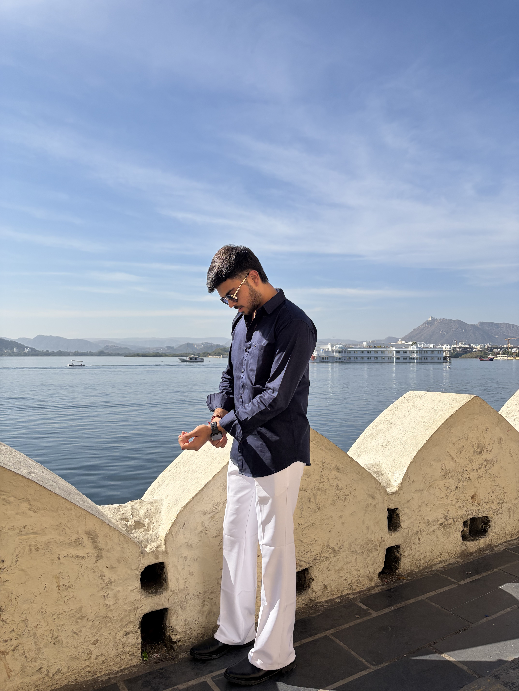
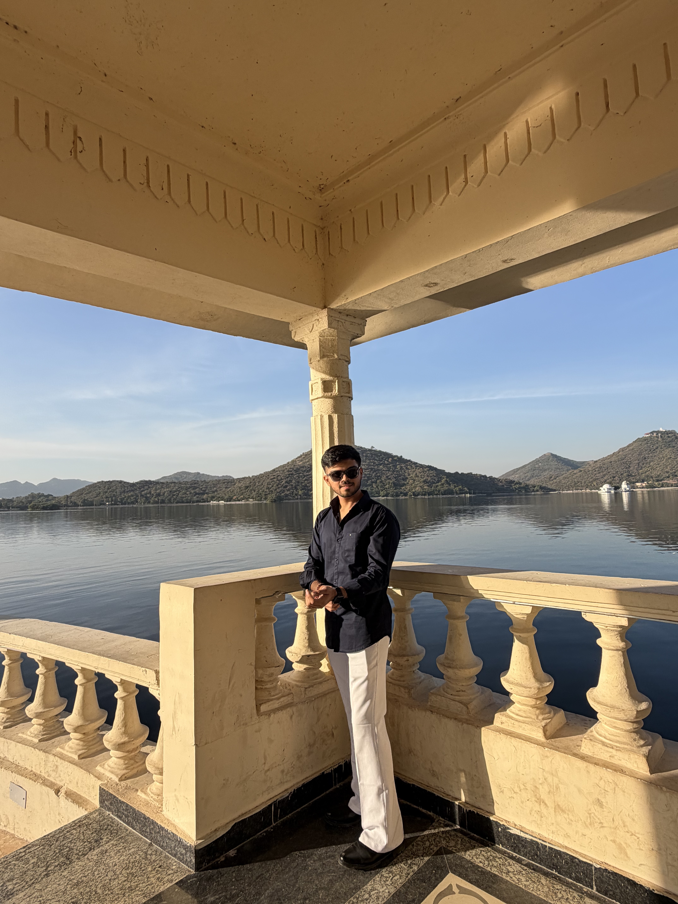

Dhruv's digital world
Building calm, confident interfaces while growing into full stack development.
I am Dhruv, a B.Tech IT student at P P Savani University, and I genuinely enjoy the world of technology. I want to build my career in full stack development, and right now I am focused on learning frontend development with intention. I am exploring design, layout, animation, and user experience while preparing to move into backend development next.
Featured Frame

Main visual
Quiet focus, strong ambition

Learning with patience.
Building with style.
Moving toward full stack confidence.
Building with style.
Moving toward full stack confidence.
I enjoy turning simple code into interfaces that feel memorable, polished, and alive.
I believe in learning consistently, practicing deeply, and improving one project at a time.
My goal is to combine the beauty of frontend with the power and logic of backend systems.
About me
Quiet ambition, clean thinking, and a real love for technology.
Websites have always made me curious about how beautiful digital experiences are created. That curiosity slowly turned into a real interest in coding, and now I am using this portfolio as a way to build my identity on the web.
I enjoy frontend development because it brings together structure, color, spacing, motion, and storytelling. At the same time, I understand that becoming a strong developer also means learning backend logic, data flow, and how real products work behind the scenes.
My approach is simple: stay calm, keep practicing, and grow through every project. I want to become the kind of developer who can design, build, and deliver complete digital experiences.
My journey
Where I am now, what I am learning, and what I am aiming for next.
Why IT excites me
Technology brings creativity and logic together, which is why this field feels like the right path for me.
Frontend right now
I am currently focusing on responsive design, visual hierarchy, animation, and writing cleaner code.
Backend next
Backend is the next step for me because I want to build stronger product thinking from end to end.
Long-term vision
I want to become a developer who can work confidently from design to development to deployment.
Skill direction
I am building a strong foundation now so I can grow into a complete developer later.
What I am sharpening
What attracts me most in frontend is the balance between layout, color, motion, and user-first thinking. I do not want code to only function well. I want it to feel right too, which is why I care about polish in the interface.
At the same time, I am preparing myself to learn backend development seriously, because my long-term goal is to build complete solutions, not just beautiful pages but real systems.
Photo showcase
These photos are not just displayed here. They are presented as a layered visual story with depth.
Lead visual
Quiet focus, strong ambition
The framing, calm expression, and lakeside setting made it the strongest image to feature first.Side frame
Open-air lakeside mood
Architectural frame